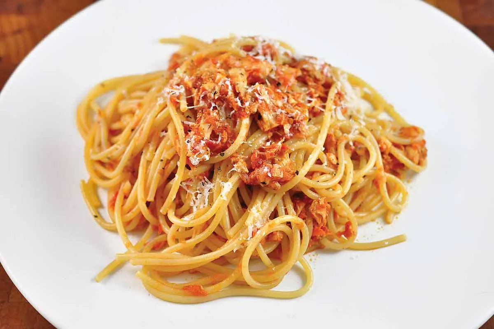

Tomato Tuna Recipe

Description
The tuna tomato spaghetti dish is a simple to do, protein-rich meal that
will keep you satisfied throughout the day
Whether you're short on time or ingredients, this dish comes to the rescue.
It will take you around 20 minutes and just a handful of ingredients to get it done
Ingredients
- Spaghetti (or any type of pasta you prefer)
- A can of tuna
- Tomato-based sauce (can buy pre-made or make it yourself)
- Salt
- Garlic
Steps
- Pasta Related
- Boil water
- Put pasta in the water
- Add salt and granulated garlic
- Let cook for 10 minutes
- Tuna Related
- Put 2-3 spoons of tomato sauce on a pan with oil
- Add whole tuna of the can
- Mix and add salt and granulated garlic
- Let cook until sauce has been reduced
Then mix it all up and you're done!